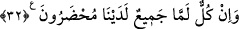
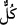
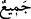

sonra da vefat ettiği söylenen ilk kocası çıkıp gelirse bu kadın ilk kocaya âiddir. Çünkü
onun nikâhlısıdır. Ortada ayrılığı gerektiren bir şey yoktur. Eski ve ilk nikâhı üzere
kalır. Fakat ikinci nikahla ilgili ayrılık iddetini tamamlamadan ilk koca hanımına
yaklaşamaz.
‘Hz. Ali (r.a.) ve arkadaşları tekrar dünayaya dönecekler ve düşmanlarından intikam
alacaklar, yeryüzü zulümle dolduğu gibi onlar da adaletle dolduracaklar’ diyen
Râfizîleri kâfir saymak lâzımdır. Çünkü böyle söylemek/inanmak nassa muhâliftir. Evet,
hakîkat ehlinin görüşüne göre Hz. Ali (r.a.)’ın rûhâniyeti âhir zamanda Mehdînin
vezirlerindendir. Bunda asla bir mahzur yoktur. Çünkü ruhlar her vakit ve her halde
ruhlara ve cisimlere yardım eder. Bunu böyle bil.
32. Elbette onların hepsi (kıyamet gününde) karşımızda hazır bulunacaklar.
“Elbette onların hepsi” bütün yaratıklar hesap ve cezâ için “(kıyamet gününde)
karşımızda hazır bulunacaklar.”
Âyette “__WORD__” ve “__WORD__ kelimesi bir arada zikredilmiştir. Çünkü “__WORD__” kelimesi
toplanmayı değil, ihâta/kuşatma ve şümûlü ifade eder. Onlardan hiçbirini dışarda
bırakmaz. “__WORD__ kelimesi ise mahşerin onları hep bir araya toplayacağını ifâde eder.
Mânâ şöyledir: Bütün yaratılmışlar katımızda toplanacaklar, hesaba çekilmek ve
yaptığının karşılığını almak için karşımızda hazır edileceklerdir. Durum şu ki mutlak
olarak yaratılmışlardan her biri diğeri ile birlikte katımızda toplanacak, hesaba
çekilmek ve yaptıklarının karşılığını almak için hazır edileceklerdir.
Bu âyet dünyaya dönüş olmadığının açıklanmasından sonra herkesin mahşere
döneceğini beyan etmektedir. Şayet ölen kimse kendi hâline bırakılıp öldükten sonra
yeniden diriltme, toplama, hapsetme, hesaba çekme ve cezâlandırma olmasaydı; elbette
kendisine ölüm ölen kişi için bir rahatlık olurdu. Ancak ölen kişi diriltilir ve ona suâl
sorulur. Ardından mü’min, muhlis, sâlih ve âdil kimselere ikramda bulunulur. Kâfir,
münâfık, mürâî, fâsık ve zâlim kimseler ise aşağılanıp horlanır. Sonuçta sevinen sevinir,
üzülen de üzülür. Kullar bugün hasret duyup pişman olmasalar da elbet hasret/pişmanlık
duyacakları bir yer vardır.
Bilesin ki bizim zamanımızda yaşayanların çoğuna hak ehline muhâlefet ve Allah
dostlarına düşmanlık ve onlarla alay etmek gâlib olmuştur. Görmez misiniz ki onlar
sözü muhakkıklardan dinleyip o sözün en çirkin olanına uyuyorlar. Allah dostlarının
aleyhine konuşuyorlar. Onlarla ve onların güzel sözleriyle alay ediyorlar.
Nazar/tefekkür ehlinden ve irâde sahiplerinden Allah Teâlâ’nın kendilerine hayır
diledikleri bundan hariçtir. Onlar da çok azdır.
Allah Teâlâ bu makamda ibâre yoluyla şeriatı inkar eden kâfirleri tehdid ettiği gibi